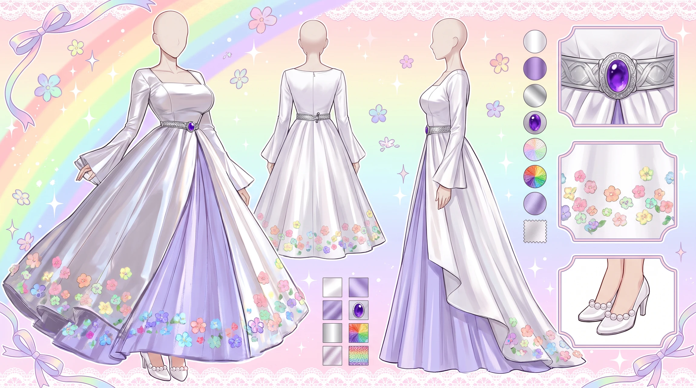
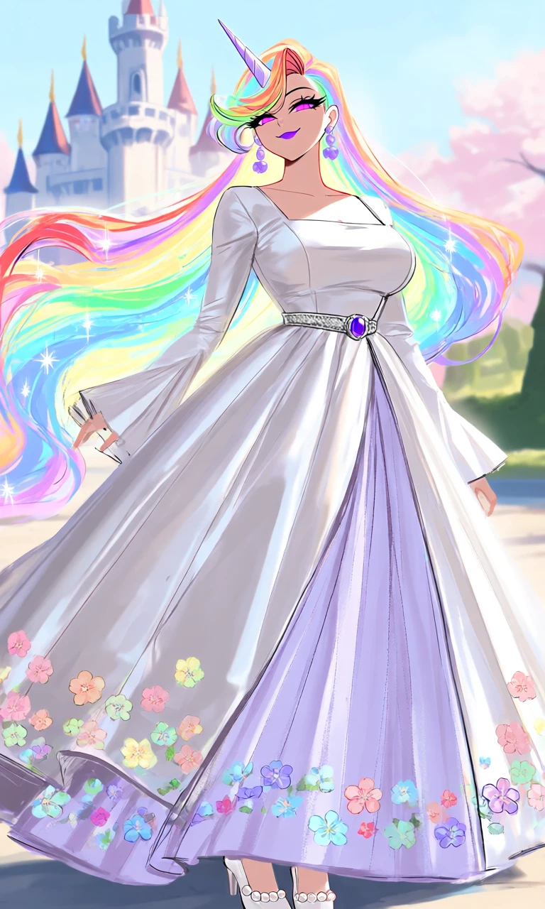

Prismatic Petals

Outfit Prompt
A floor-length pearl-white gown in softly lustrous silk, with a wide square neckline, a fitted bodice, and long sleeves that flare gently at the wrists. The paneled skirt opens over a pale lavender underskirt, with tiny blossoms embroidered in pastel pink, peach, yellow, mint, blue, and violet along the hem. A narrow silver belt with a purple gemstone clasp, a pair of lavender drop earrings, and pearl-white shoes complete the formal ensemble.
Outfit Examples

